This paper introduces a buffer manager design for a DRAM/NVM/SSD three-tier storage architecture. Key contributions:
A probabilistic quantification framework for three-tier buffer migration policies.
Based on this framework, a simulated annealing algorithm for workload-adaptive migration policies.
An implementation of the Spitfire buffer manager (~14,000 lines of C++), validated across workloads and compared against HYMEM, discussing how different factors affect performance and how to select an appropriate storage architecture.
I. Background
Storage medium characteristics deeply influence database system design. Traditional DBMS design assumed a two-tier hierarchy: high-speed low-capacity volatile storage (DRAM) and low-speed high-capacity non-volatile storage (SSD/HDD). The emergence of NVM breaks this assumption and may cause profound changes to DBMS design.
NVM (Non-Volatile Memory), also called PMEM (Persistent Memory) or SCM (Storage Class Memory), sits between DRAM and SSD with the following properties:
Persistence: Data survives power loss. ⟹ Eliminates expensive fsync.
CPU-accessible: CPU can read/write NVM directly. ⟹ DRAM can be bypassed.
Intermediate latency/bandwidth: Between DRAM and SSD. ⟹ Can serve as high-performance SSD (DRAM/NVM), persistent DRAM (NVM/SSD), All-in-NVM, or the middle tier in DRAM/NVM/SSD.
Byte addressability: Intel 3D XPoint Optane's actual access granularity is 256 bytes. ⟹ No need for page-granularity buffer loads; finer-grained scheduling is possible.
Limited write endurance: Fewer write cycles than DRAM or SSD. ⟹ Migration policies must balance performance against write amplification.
The only production-grade NVM is Intel 3D XPoint Optane (released 2017). Most NVM-related research (including this paper) is evaluated on this hardware.
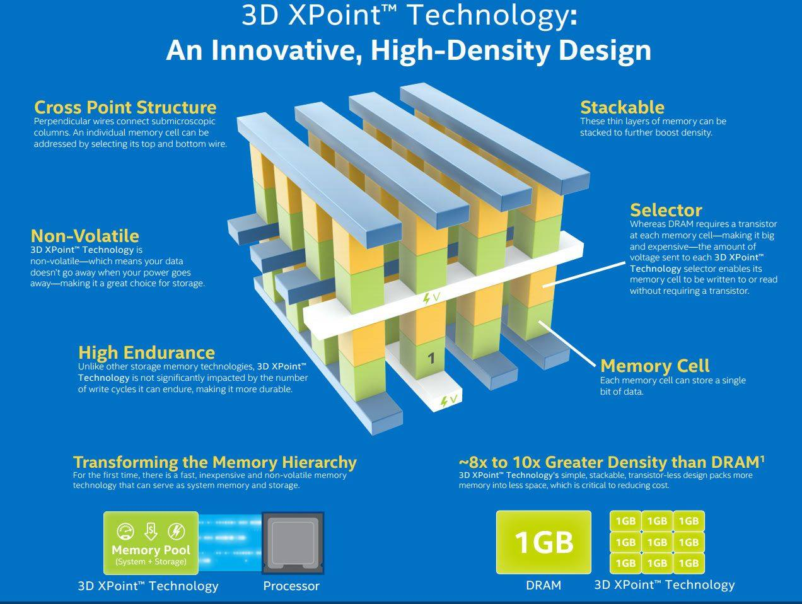
Intel 3D XPoint Technology — an innovative high-density non-volatile memory design.
DRAM
NVM
SSD
Latency
Idle Sequential Read
75 ns
170 ns
10 μs
Idle Random Read
80 ns
320 ns
12 μs
Bandwidth
Sequential Read
180 GB/s
91.2 GB/s
2.6 GB/s
Random Read
180 GB/s
28.8 GB/s
2.4 GB/s
Sequential Write
180 GB/s
27.6 GB/s
2.4 GB/s
Random Write
180 GB/s
6 GB/s
2.3 GB/s
Other
Price ($/GB)
10
4.5
2.8
Addressability
Byte
Byte
Block
Media Access Granularity
64 B
256 B
16 KB
Persistent
No
Yes
Yes
Endurance (cycles)
1016
1010
1012
NVM can be incorporated into the storage hierarchy in many combinations (All-in-NVM, NVM/SSD, DRAM/NVM, DRAM/NVM/SSD), and there are various DBMS write modes (in-place, copy-on-write, log-structured/LSM-tree). This paper adopts DRAM/NVM/SSD with in-place writes.
In a classic DRAM/SSD two-tier hierarchy the buffer manager makes two decisions: which pages to cache, and when to cache them.
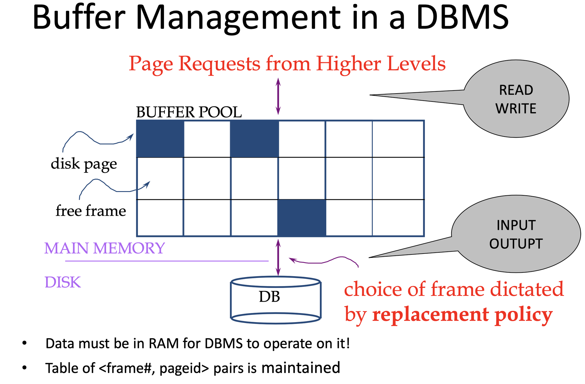
Buffer Management in a DBMS: the replacement policy governs which frames are evicted.
The most famous formulation is Jim Gray's Five Minute Rule (SIGMOD 1987):
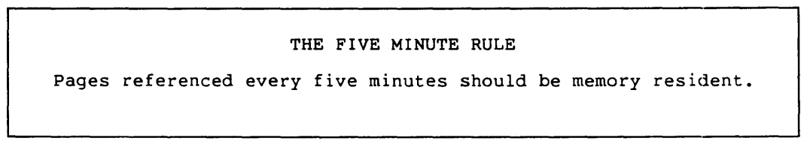
With a DRAM/NVM/SSD three-tier hierarchy, the buffer manager must additionally decide where to move pages, as NVM, DRAM, SSD, and CPU cache can all interact directly.
II. Prior Work: HYMEM
HYMEM [SIGMOD 2018] is the first buffer manager designed for DRAM/NVM/SSD. It distributes pages by access frequency: hot pages → DRAM, warm pages → NVM, cold pages → SSD.
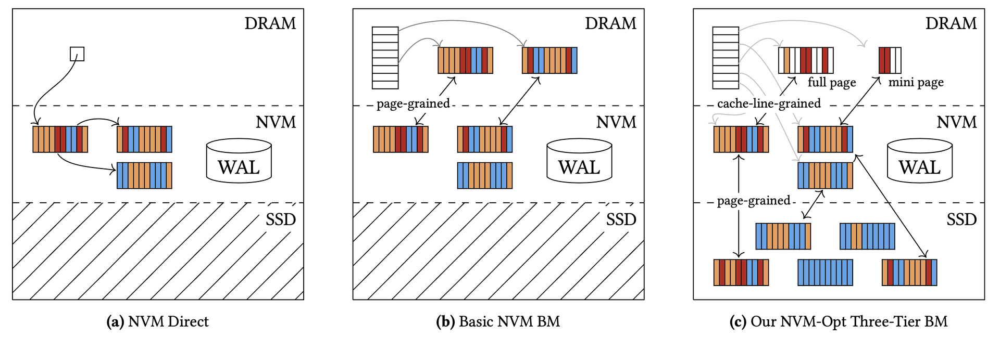
Three NVM-aware buffer management approaches: (a) NVM Direct — all data on NVM; (b) Basic NVM BM — page-grained loading into DRAM; (c) Our NVM-Opt Three-Tier BM — cache-line-grained loading with mini-pages.
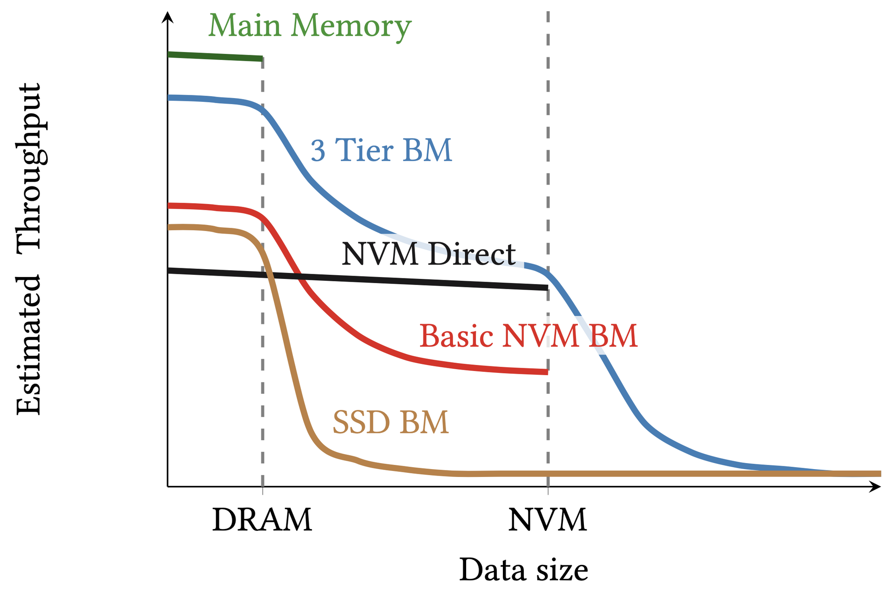
Estimated throughput across architectures as data size grows past DRAM then NVM capacity.
HYMEM implements two optimizations on top of a clock-based migration strategy:
Cache-line-grained pages: Exploits NVM byte addressability to load NVM pages into DRAM at cache-line granularity. DRAM maintains resident and dirty bitmaps per page.
Mini-pages: A compact form with capacity of 16 cache lines; automatically upgraded to a full page when the resident line count exceeds 16. This reduces DRAM waste from sparsely populated pages.
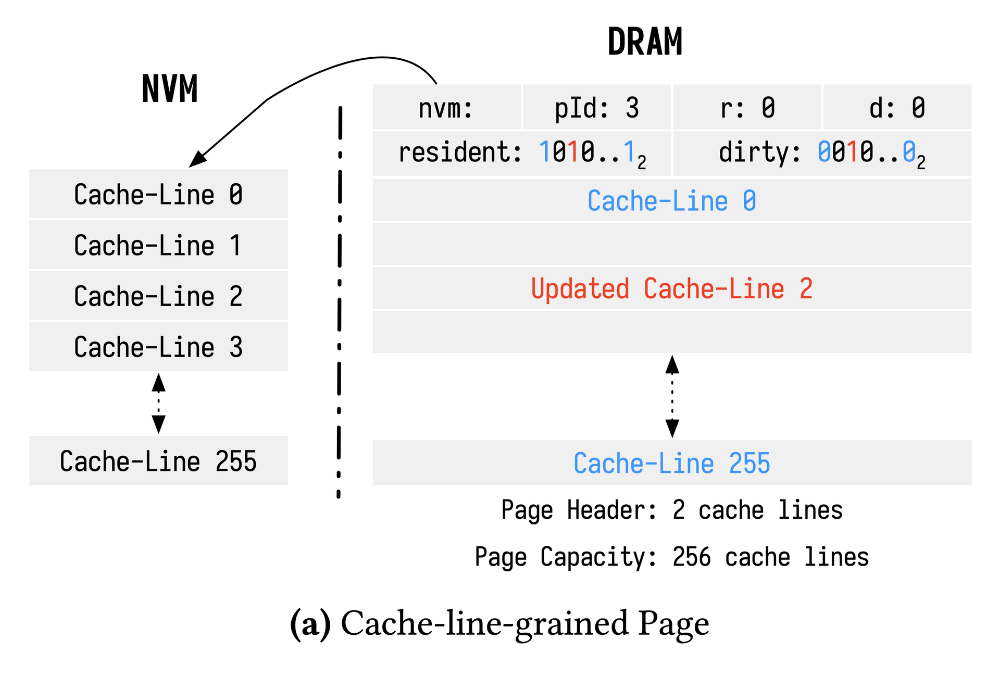
(a) Cache-line-grained Page: DRAM tracks which cache lines from an NVM page are resident and dirty.
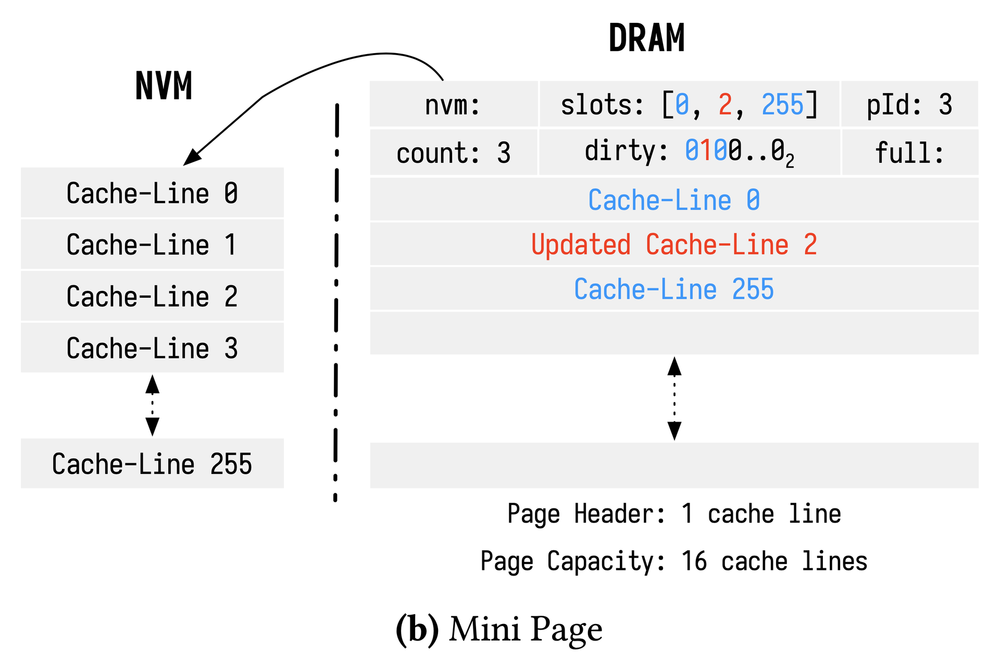
(b) Mini Page: a compact form storing only resident cache lines, with capacity 16. A slots array records which NVM cache lines are present.
HYMEM's migration policy involves five data transfer directions and three critical decisions:
If a required page is in neither DRAM nor NVM, read it directly from SSD into DRAM (path 1).
Critical Decision 1 — DRAM eviction: Use clock (second-chance) when DRAM is full.
Critical Decision 2 — NVM admission: When a page is evicted from DRAM (with no NVM copy), consult the Admission Queue: not in queue → evict to SSD and enqueue (path 3→5); in queue → evict to NVM (path 3→4). This is an inverted clock for admission — only pages evicted twice enter NVM.
If a required page is in NVM but not DRAM, load it at cache-line granularity (path 2), exploiting byte addressability.
Critical Decision 3 — NVM eviction: Use clock when NVM is full (path 6).
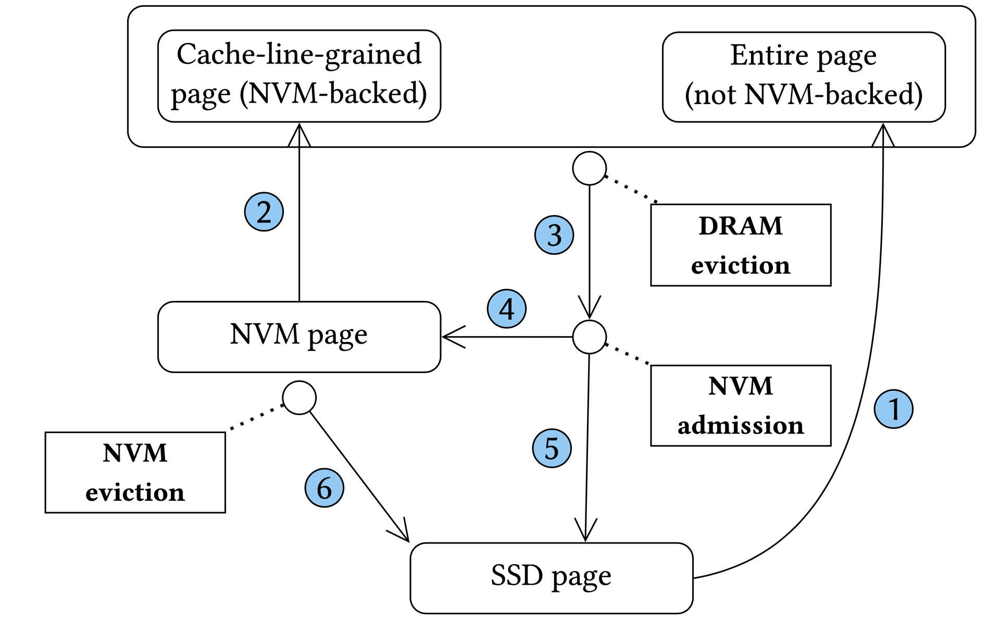
HYMEM page state transition diagram showing all six migration paths.
With these optimizations, YCSB-RO throughput surpassed NVM Direct:
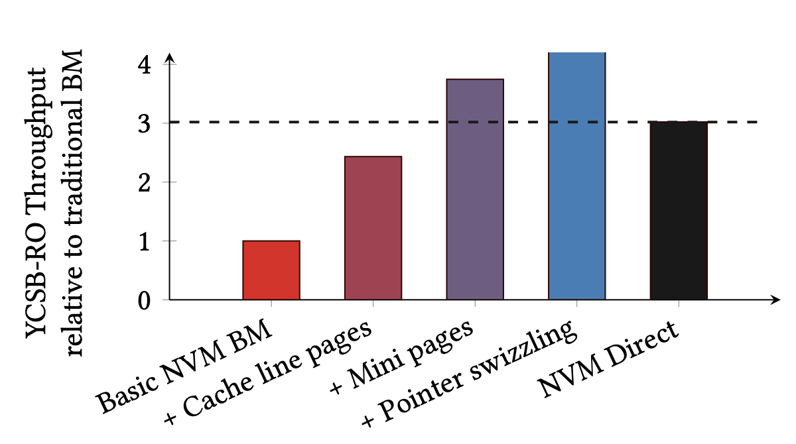
YCSB-RO throughput relative to traditional BM, showing cumulative effect of each HYMEM optimization.
HYMEM also uses pointer swizzling — replacing page identifiers in DRAM with direct pointers to reduce page-table lookup overhead:
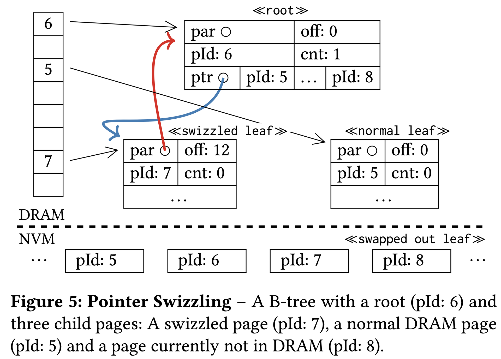
Figure 5: Pointer Swizzling — a B-tree with a swizzled leaf (pId: 7), a normal DRAM leaf (pId: 5), and a swapped-out leaf (pId: 8).
However, HYMEM has several known limitations:
Does not support all possible data flows — SSD→NVM and NVM↔CPU direct paths are absent, causing data duplication across DRAM and NVM and wasting inter-tier bandwidth.
SSD→DRAM direct loading easily evicts hot pages from DRAM.
Single-threaded; concurrency safety is not addressed.
III. NVM-Aware Data Migration Policy: A Taxonomy
Spitfire enables all possible data flows, resolving the issues caused by HYMEM's restricted paths. The full DRAM/NVM/SSD migration topology:
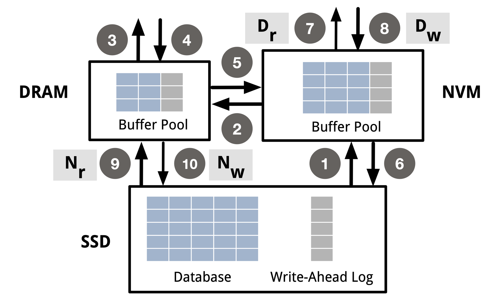
All ten possible data migration paths in the DRAM/NVM/SSD hierarchy. Dr/Dw govern DRAM↔NVM flows; Nr/Nw govern NVM↔SSD flows.
To quantitatively describe and compare migration policies, Spitfire defines a 4-tuple:
P = ⟨Dr, Dw, Nr, Nw⟩
Notation
Definition
Complement
Interpretation
Dr
P(NVM → DRAM)
1 − Dr
P(NVM → CPU)
Dw
P(CPU → DRAM)
1 − Dw
P(CPU → NVM)
Nr
P(SSD → NVM)
1 − Nr
P(SSD → DRAM)
Nw
P(DRAM → NVM)
1 − Nw
P(DRAM → SSD)
Each parameter is implemented via random sampling of access history. A hot page appearing N times in NVM access history is promoted to DRAM with probability:
1 − (1 − Dr)N → 1 as N → ∞
Using randomness rather than complex deterministic tracking simplifies the system and improves scalability — the same idea as lottery scheduling.
Semantic interpretation of each parameter:
Dr: Probability of promoting an NVM page to DRAM on read. Larger Dr when the working set fits in DRAM; smaller when it doesn't.
Dw: Probability that a CPU write goes to DRAM (vs. directly to NVM). Smaller Dw avoids evicting hot DRAM pages and exploits the NVM↔CPU path.
Nr: Probability that an SSD miss loads into NVM (vs. directly into DRAM).
Nw: Probability that a DRAM eviction writes through NVM before SSD. Analogous to HYMEM's Admission Queue, but probabilistic. Smaller values reduce NVM wear.
HYMEM maps to: Dr = Dw = 1, Nr = 0, Nw = f(|AdmQueue|).
IV. Adaptive Data Migration: Simulated Annealing
Spitfire tunes P adaptively using simulated annealing with cost function cost(P) = 1/T (inverse throughput):
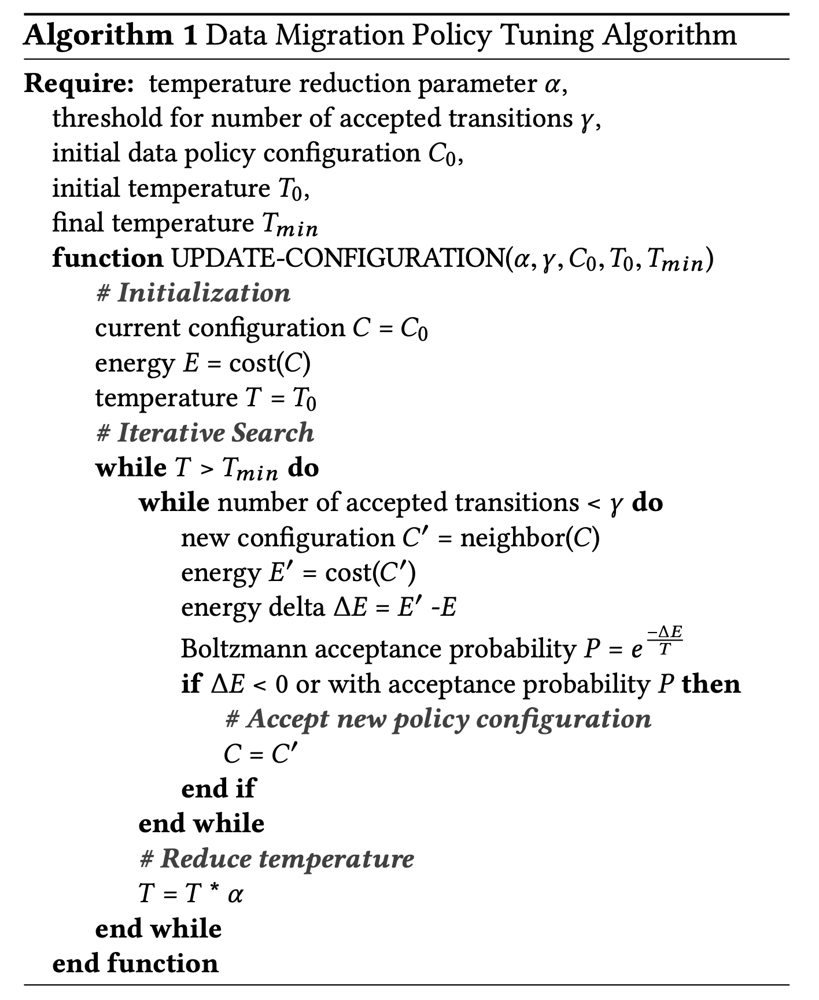
Algorithm 1: Data Migration Policy Tuning via Simulated Annealing.
Starting at high temperature (broad exploration) and cooling gradually, the algorithm converges to the global optimum with high probability. For practical discussion, two reference policies are defined:
Policy
Dr
Dw
Nr
Nw
HYMEM
1
1
0
AdmQueue
Spitfire-Eager
1
1
1
1
Spitfire-Lazy
0.01
0.01
0.2
1
Eager always follows SSD→NVM→DRAM→CPU reads and CPU→DRAM→NVM→SSD writes. Lazy routes most NVM accesses directly to CPU (Dr = Dw = 0.01), reads most SSD misses directly into DRAM (Nr = 0.2), and writes all DRAM evictions directly to SSD (Nw = 1), protecting NVM from cold writes.
V. Spitfire: System Architecture
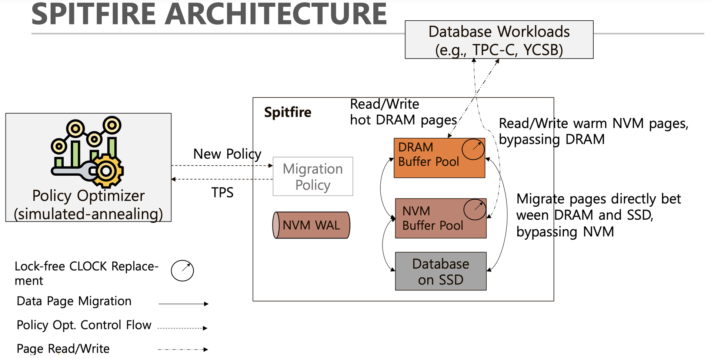
Spitfire Architecture: a policy optimizer (simulated annealing) continuously tunes the migration policy; the buffer manager serves hot DRAM pages and warm NVM pages with a lock-free CLOCK replacement.
Spitfire maintains a concurrent hash table (mapping table) in DRAM with per-page metadata including per-tier latches and tier-specific page descriptors:
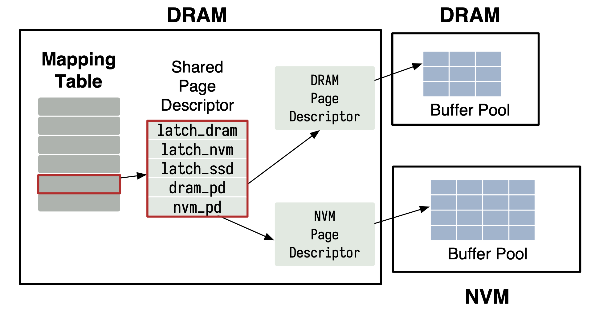
Mapping Table structure: each entry holds shared page descriptor with latch_dram, latch_nvm, latch_ssd, and pointers to DRAM and NVM page descriptors.
On a page request:
Page in DRAM → return DRAM buffer frame.
Page in NVM and policy permits NVM→CPU bypass → return NVM buffer frame directly.
Page absent → load into DRAM or NVM per migration policy.
Eviction from either tier uses the clock algorithm. A thread migrating a page between tiers must hold both tiers' latches simultaneously, but another thread can still modify the DRAM copy concurrently. Spitfire additionally uses a concurrent bitmap for migration tracking, MVTO for concurrency control, and a concurrent B+Tree with optimistic lock coupling for indexing.
The WAL is implemented in NVM. An async thread periodically flushes the NVM log to SSD when it exceeds a size threshold. On restart, Spitfire scans NVM to identify the latest page versions, rebuilds the mapping table, appends the NVM log buffer to the SSD log file, then executes standard DBMS recovery (analysis, redo, undo).
Throughput comparison of NVM/SSD vs. DRAM/SSD at equal cost across workloads and database sizes.
For YCSB-RO/BA, DRAM/SSD is better when the working set fits in DRAM; throughput drops sharply once DRAM capacity is exceeded.
As write ratio increases toward TPC-C, the gap narrows — NVM avoids the dirty-page-flush-to-SSD overhead that DRAM/SSD incurs.
Optimal Migration Policy per Workload
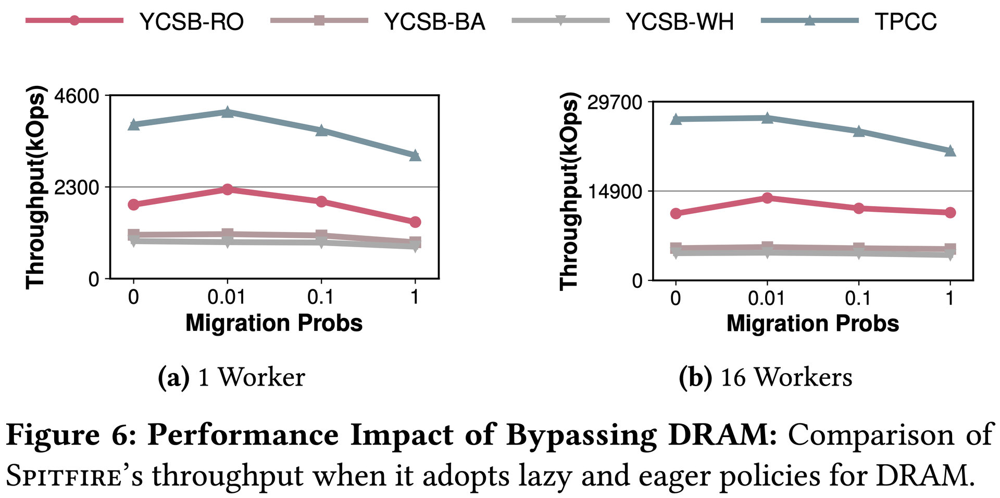
Figure 6: Performance Impact of Bypassing DRAM — throughput vs. D migration probability. D = 0.01 is optimal across all workloads.
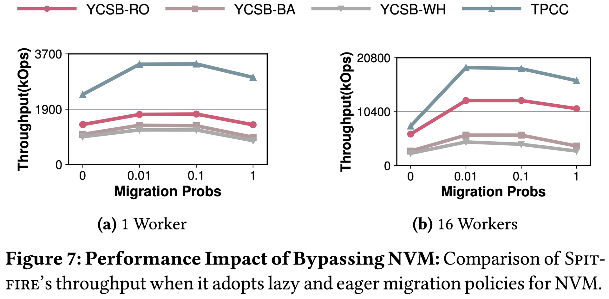
Figure 7: Performance Impact of Bypassing NVM — throughput vs. N migration probability. N = 0.01 is optimal; setting N = 0 hurts more than D = 0 because NVM capacity ≫ DRAM capacity.
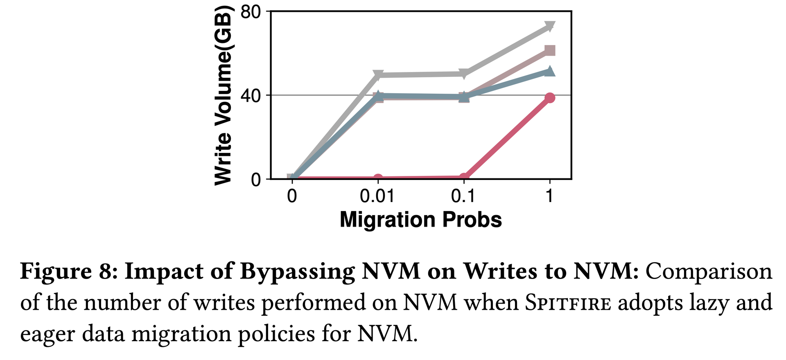
Figure 8: Impact of Bypassing NVM on Writes to NVM — lazy strategy significantly reduces NVM write volume, extending device lifetime.
Combined conclusion: lazy (D = N = 0.01) performs best. NVM read/write performance is close to DRAM, so minimizing DRAM/NVM duplication maximizes effective cache, and only the hottest pages migrate to DRAM.
Simulated Annealing Convergence
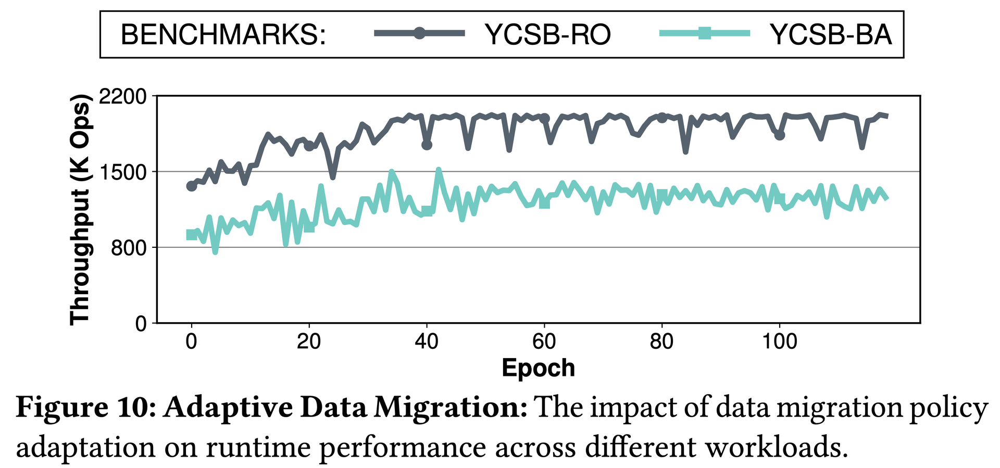
Figure 10: Adaptive Data Migration — simulated annealing converges to near-lazy policy within ~40 epochs on both YCSB-RO and YCSB-BA.
HYMEM vs. Spitfire
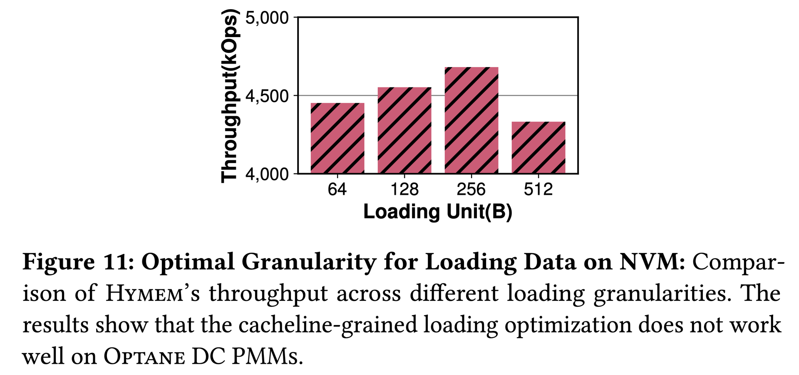
Figure 11: Optimal Granularity for Loading Data on NVM — 256 B is optimal on Optane DC PMMs, not HYMEM's assumed 64 B.
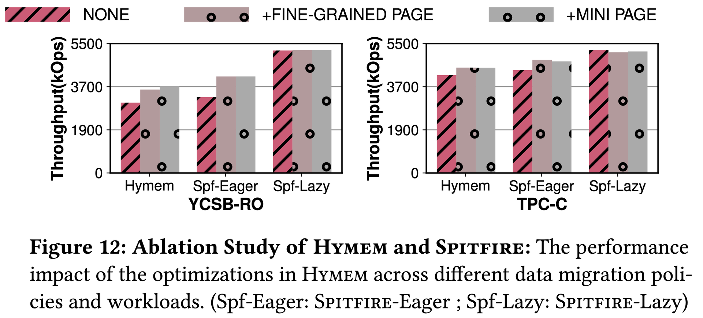
Figure 12: Ablation Study — Spitfire-Lazy significantly outperforms HYMEM across all conditions, showing that migration policy choice matters more than fine-grained loading optimizations.
We demonstrate that the choice of the migration policy is more important than the fine-grained loading and mini-page optimizations. — Spitfire
Impact of Database Size
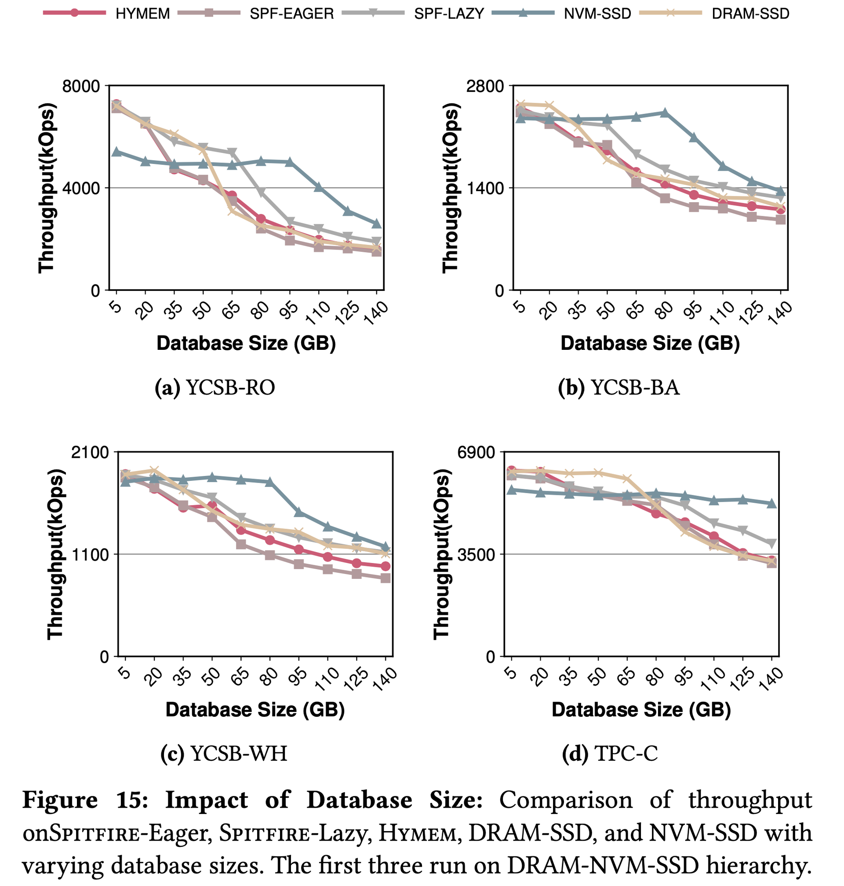
Figure 15: Impact of Database Size — Spitfire-Lazy leads on DRAM/NVM/SSD for read-heavy and small workloads; NVM/SSD leads for write-heavy and large workloads.
Three design principles from the storage architecture analysis:
For maximum absolute performance, architecture must include DRAM.
For read-intensive workloads, DRAM/NVM/SSD achieves the best performance/price ratio.
For write-intensive workloads, NVM/SSD achieves the best performance/price ratio — NVM persistence reduces recovery protocol overhead.
VII. Conclusion
HYMEM, the first DBMS buffer manager for DRAM/NVM/SSD, achieves performance beyond NVM Direct via clock-based hot/warm/cold page distribution combined with NVM byte-addressability optimizations. Spitfire introduces a probabilistic vector representation of migration policies that enables simulated annealing-based workload adaptation. Its key finding: migration policy selection dominates performance, outweighing HYMEM's fine-grained cache-line and mini-page optimizations. The Spitfire-Lazy policy, which minimizes DRAM/NVM data duplication, consistently outperforms HYMEM across diverse workloads.